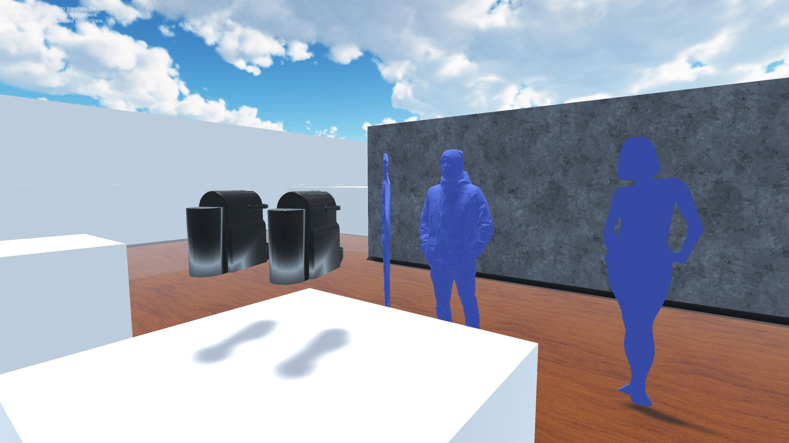

Projet universitaire de développement de la réalité virtuelle (VR) dans le pôle Design industriel de l’UTC (Université de Technologie de Compiègne) : Accompagner un duo d’étudiant dans la réalisation de leur prototype virtuel.
La réalité virtuelle possède de nombreux avantages pour le prototypage. Une flexibilité d’échelle, de couleur, de forme et d’environnement. J’ai aidé à la présentation du produit Lightping imaginé par Yanna Carli et Jérémy Pointel pour une marque de table de ping pong. Celui est un éclairage nocturne de table.La solution a été développée sur Unity3D avec le matériel Steam VR. Il existe d’autres solutions logicielles dont « Meshroom VR » créé par un ancien étudiant de la filière design et qui propose des rendus réalistes clé en main.

Une application de réalité virtuelle standalone. L’utilisateur se trouve dans un environnement de nuit avec la table de pingpong et la solution « Lightping ». Il peut se téléporter autour de la table. Les objets sont à l’échelle 1. L’utilisateur peut ainsi se rendre compte si la solution pourrait le gêner lors du jeu.
La première vidéo présente la vue intérieure du casque VR.
La deuxième démontre la correspondance d'échelle entre la VR et la réalité. En effet, lorsqu'on place la table de ping pong (ici avec la maquette fonctionnelle du projet accroché) de façon à correspondre à son emplacement dans le casque on peut arriver une précision inférieure au cm.
J’ai développé en parallèle une série de tutoriels vidéo et un projet afin que les étudiants
puissent être autonome avec le matériel.
Projet
VR de base + cheat sheet matériaux PBR
